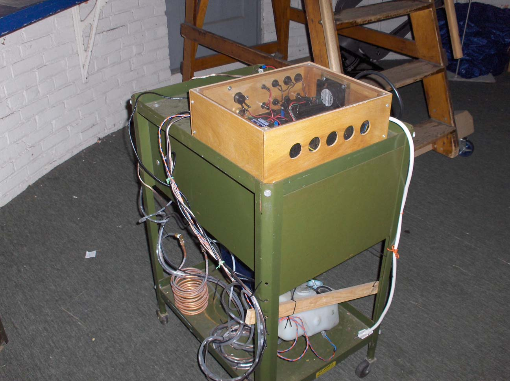
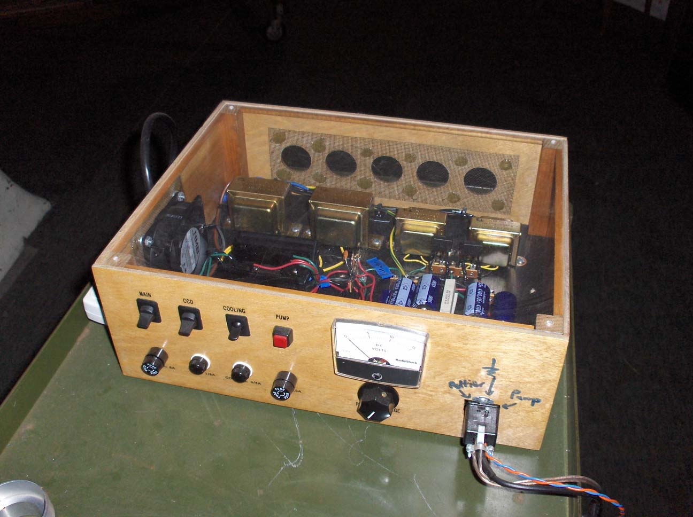
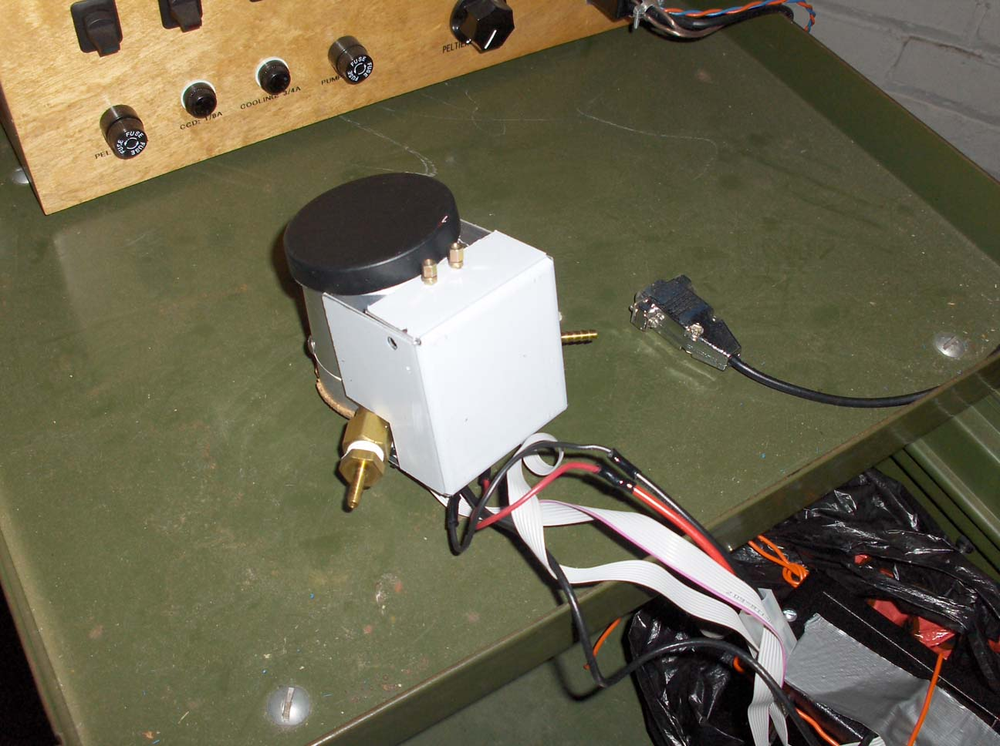

CCD camera project
This is a project started in Spring 2002. We are assembling a "Cookbook" CCD camera from its components. The setup consists of three main parts: the power supply, interface box and CCD camera head. The CCD camera will provide stunning digital images of deep sky objects.
UPDATE (07/16/2007): And we have pictures! And some more pictures! And we've figured out how everything works, so you can expect even more pictures!
UPDATE (09/07/2006): We have a computer, if a somewhat big one, and a few persistant problems with the cooling system (i.e., leaks) have been fixed. As soon as we get the software set up, we'll take some test photos and let you know how things went.
UPDATE (06/18/2006): No doubt several of you have been wondering about the lack of updates or photos. The good news is that the cooling system is working. The bad news is that the only CAS member with a compatible laptop has vanished, so we are trying to make an arrangement with one of the department staff.
UPDATE (09/07/2005): All we're missing is setting up the cooling system for the CCD chip. The camera has seen first light, though, and apart from the thermal noise it is fully operational!
UPDATE (07/07/2005): This project is almost complete! All we lack are a laptop and a pump. The laptop will be used to run the camera's control software while the pump will circulate a coolant that will cool the CCD chip.
This is our setup. The box on top contains all the electronics needed to control and read the camera. The stuff on the bottom is our cooling system. Not fancy or pretty, but it works.

Here's a close-up of the electronics box.

And here's the camera head, the part that we actually stick in the telescope. The black end is the lens cover.
